La nostra storia
Our story
Quattordici amici, un gruppo WhatsApp e un'idea che non si è più fermata.
Fourteen friends, a WhatsApp group and an idea that never stopped.
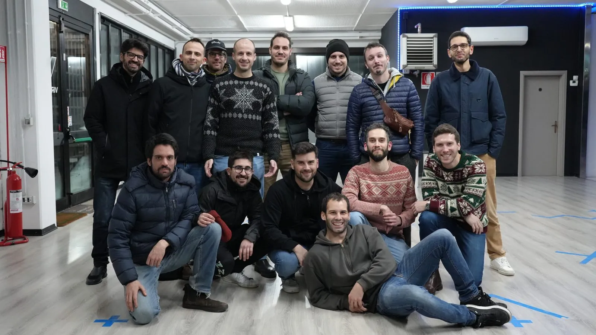
Tutto è cominciato con un gruppo WhatsApp. Nel 2019 eravamo in pochi e l'unico scopo era mettersi d'accordo su chi salpava quella sera: rotte, ciurma e naufragi su Sea of Thieves. Niente di più.
It started as a WhatsApp group. In 2019 there were only a handful of us, and its entire purpose was settling who was setting sail that night: routes, crew and shipwrecks on Sea of Thieves. Nothing more.
Poi è arrivato il 2020 e il mondo si è fermato. Giornate intere chiusi in casa, senza potersi vedere. Quella che poteva essere la fine di un gruppo di amici è diventata il suo inizio: le serate si allungavano, le partite pure, e quel gruppo WhatsApp è cresciuto fino a diventare i quattordici soci fondatori di BOXALMATCH.
Then 2020 arrived and the world stopped. Whole days shut indoors, unable to see each other. What could have been the end of a group of friends turned out to be its beginning: the evenings ran long, the matches ran longer, and that WhatsApp group grew into the fourteen founding members of BOXALMATCH.
C'era chi non accendeva una console da vent'anni. C'era chi rispondeva da un'altra città, da un altro paese, con un fuso orario di mezzo. Non ha mai avuto importanza: vinceva sempre la voglia di esserci.
Some of us hadn't switched on a console in twenty years. Some were answering from another city, another country, a time zone away. It never mattered: wanting to be there always won.
Da lì non ci siamo più fermati. Dai ritrovi online alle LAN in presenza, e poi competizioni cinematografiche, sfide sportive, merchandise, narrativa, un lore tutto nostro e persino giochi di carte. Ogni volta la stessa formula: qualcuno lancia un'idea assurda, e nel giro di una settimana esiste.
We haven't stopped since. From online meet-ups to LAN parties in the flesh, and then film competitions, sporting challenges, merchandise, storytelling, a lore of our own and even card games. Always the same formula: someone floats a ridiculous idea, and a week later it exists.
Oggi la missione è semplice: aprire tutto questo a chiunque si riconosca in noi. Ragazzi di provincia, pochi mezzi, tanta voglia di stare insieme anche a chilometri di distanza — e quel pizzico di creatività inaspettata che trasforma una serata qualunque in qualcosa che vale la pena raccontare.
Today the mission is simple: to open all of it to anyone who recognises themselves in us. Small-town kids, not much in the way of means, a lot of wanting to be together even from far away — and that pinch of unexpected creativity that turns an ordinary evening into something worth telling.
I quattordici
The fourteen
I nomi con cui ci chiamiamo da sempre.
The names we have always called each other by.
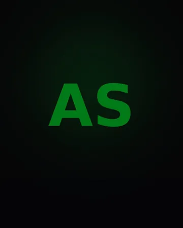
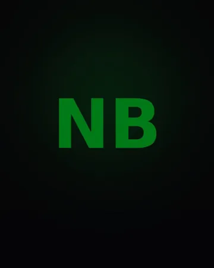
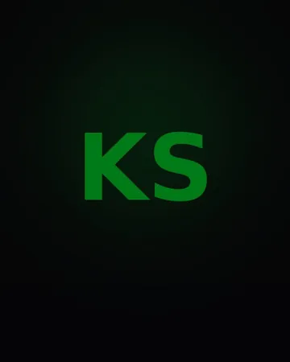
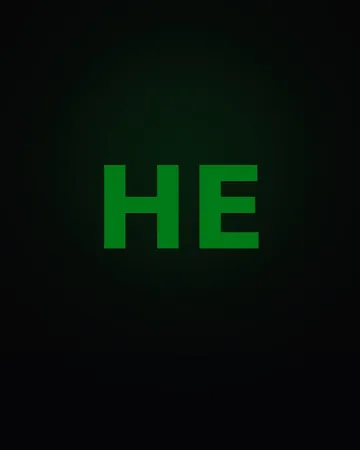
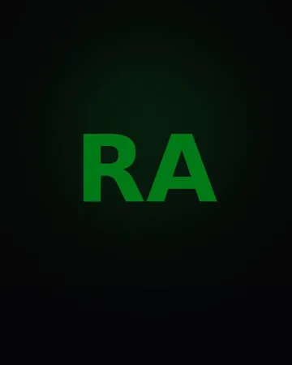
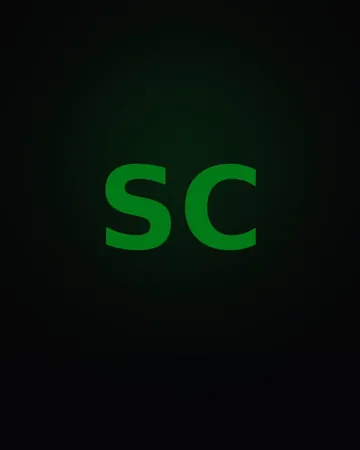
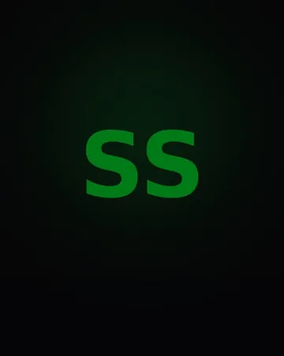
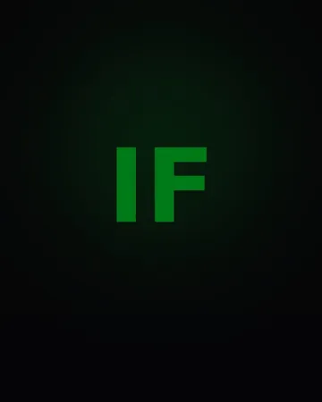
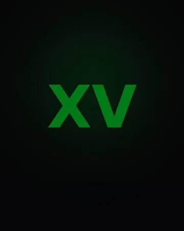
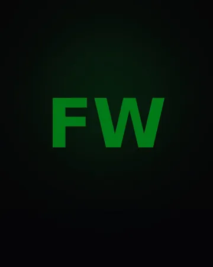
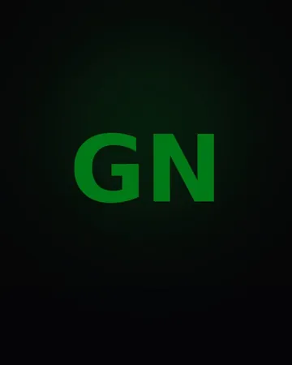
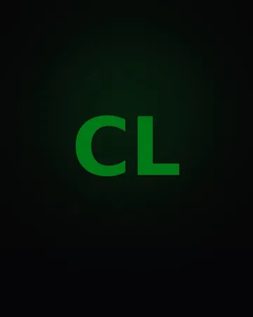
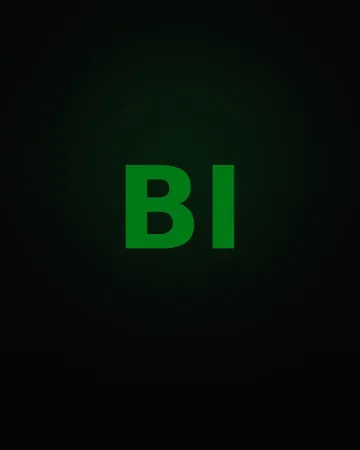
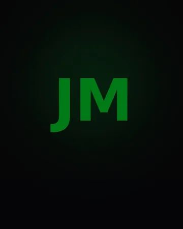